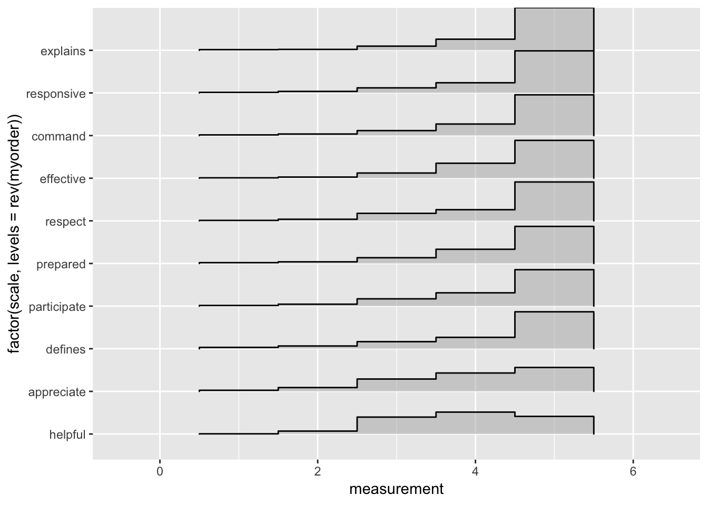

knitr::opts_chunk$set(fig.pos = 'H')Teaching brings me alive, and the passion I bring to the front of the classroom is reflected in students’ evaluations of my performance at the end of each quarter. Figure 1 below shows students’ average perceptions of my performance as a Teaching Assistant in response to multiple stimuli. The grand mean of my overall effectiveness score (4.37) has been consistently higher than the department average (4.07).
Fig 1: Students’ TA Evaluations (2016-2019)

As an educator, I prioritize the development of skills above the memorization of course material. I set high standards for my students to encourage growth and do all that I can to help students meet those standards. In setting high standards for students, I run the risk of incurring their wrath come end-of-quarter evaluations (e.g. Anonymous Student 1); however, most students appear to acknowledge their personal growth and appreciate the challenge set before them (e.g. Anonymous Student 2).
“Joseph Broad is extremely particular in his grading. For an introductory Political Science course, his grading is unfair and much too harsh”
- Anonymous Student 1 (Fall, 2017)
Joseph pushed students to perform at their best… After my first essay, Joseph rightly pointed out that my content was too focused on summarizing and didn’t think critically enough. He didn’t demean my writing ability, instead he motivated me to push the boundaries of what would be expected of an intro poli sci class’ paper. For the second essay I took his advice and focused on the analysis, and I truly believe my writing was better the second time around, because of his guidance"
- Anonymous Student 2 (Fall, 2017)
Among the most important skills I design exercises to develop is public speaking. This skill is applicable to every field of work, and is frequently underemphasized in courseroom settings. While some students expect a lecture setting (e.g. Anonymous Student 3), I believe I would be doing students a disservice by merely creating a passive – rather than active – learning environment. Students often choose not to participate in discussion due to social anxiety or feelings of inadequacy (e.g. Anonymous Student 4) so I strive to create an environment in which students feel comfortable speaking.
“I think the TA relies to much on student participation to make his lessons go smoothly”
“Joseph never made a student feel inadequate for asking a question, in fact he would praise the students for asking a question and moving the conversation forward”
- Anonymous Student 3 (Fall, 2018)
- Anonymous Student 4 (Winter, 2018)
Below is a list of courses for which I have served as a Teaching Assistant. Those marked in bold indicate courses I am able and prepared to lead as an instructor.
Introduction to American Politics
The Scientific Study of Politics
Introduction to Political Theory
Local and State Politics
California Politics
Media and Politics
Policy and Agenda-Setting
Ethnic Conflict